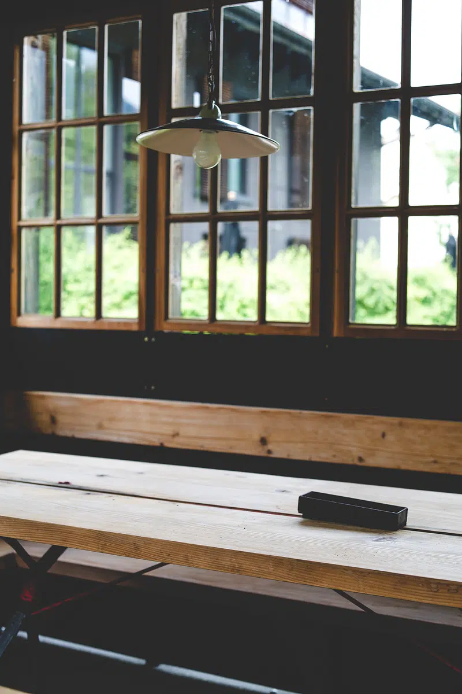
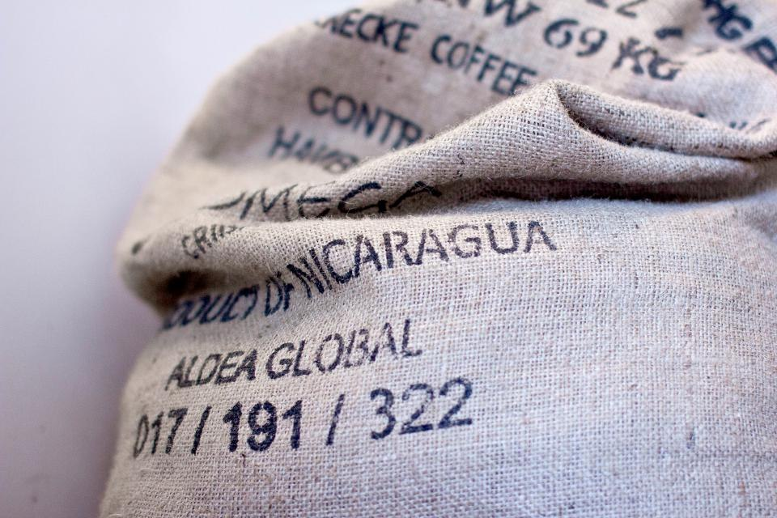
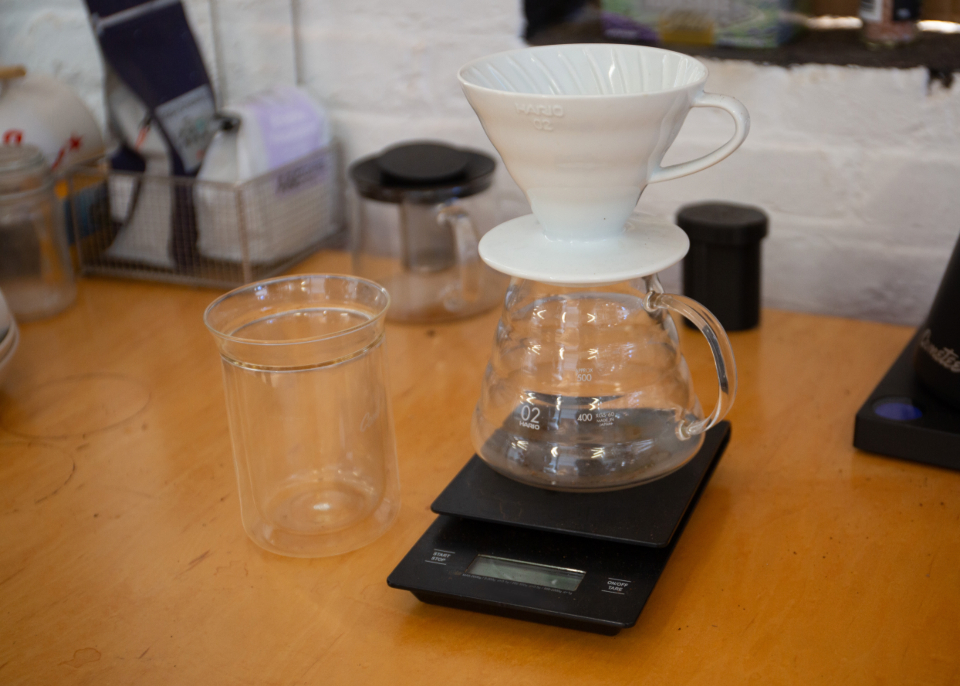

若木珈琲店が店を構えるのは、熊本県玉名郡玉東町上白木。市街地の喧騒から少し離れた、山と田畑が広がるこの土地で、珈琲という一つの素材とじっくり向き合っています。
窓の外に広がる緑を眺めながら過ごす時間もまた、この場所ならではの味わいの一部です。


若木珈琲店では、厳選した豆を用いることを大切にしています。豆そのものの個性を見極め、どう活かすかを考える——その積み重ねが、一杯の味わいにつながると考えています。
取り扱う豆の詳細や入荷状況については、店頭またはInstagramでお尋ねください。
若木珈琲店の一杯は、ご注文をいただいてからハンドドリップで淹れています。湯の温度や注ぐ速さ、蒸らしの時間——細やかな調整を重ねながら、その時々でちょうどよい一杯を目指しています。
ご希望や好みがあれば、遠慮なくお声がけください。相談しながら一杯を選んでいただけます。

玉東町の山に囲まれた立地だからこそ、ゆっくりと流れる時間があります。せわしない日常から少し離れて、一杯の珈琲に向き合う——そんなひとときを過ごしていただければと思います。